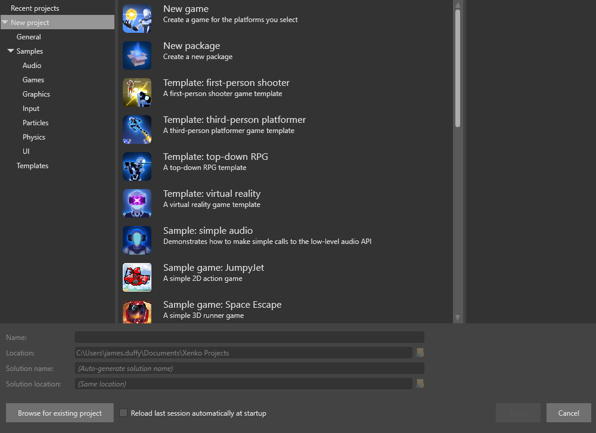
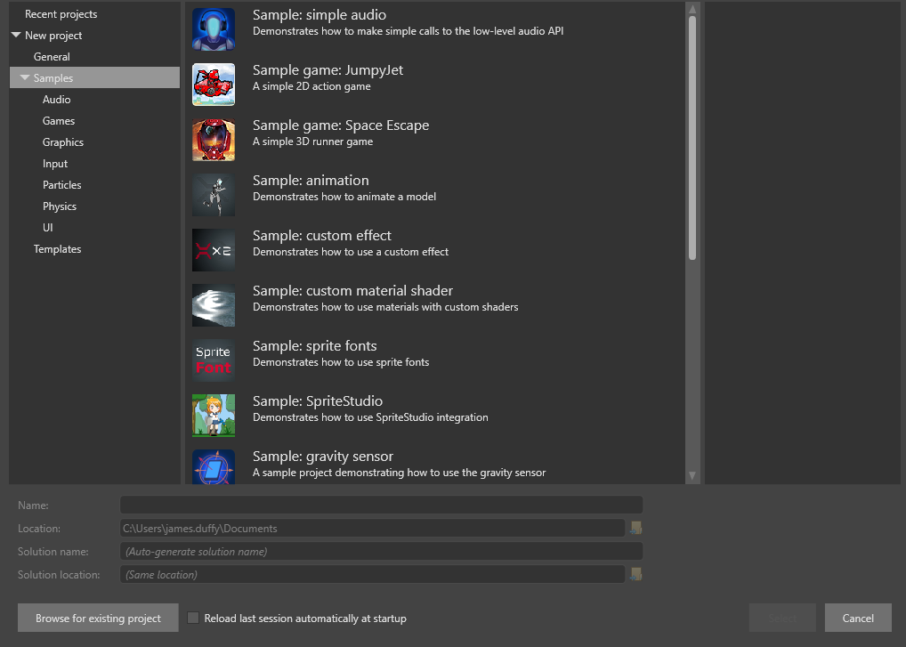

プロジェクトの作成
初級
このページでは、次の方法について説明します。
- 新しい空のプロジェクトを作成する
- テンプレートまたはサンプルを基にしてプロジェクトを作成する
テンプレートとは、ゲームについての作業を始めるために必要な要素だけを含むプロジェクトです。
サンプルとは完成したゲームであり、それから学習したり、新しいゲームの基礎にすることができます。
空のプロジェクトを作成する
空のプロジェクトとは、ゲームを作成するために必要な最低限のものだけを含むプロジェクトです。最低限のものとは、ライト、カメラ、およびカメラを移動するためのスクリプトを含むシンプルなシーンと、あらかじめ構成されているレンダリング パイプラインです。これは、必要のない要素を含まないゲームを最初から作成するときに便利です。
空のプロジェクトを作成するには:
Stride Launcher で［Start］をクリックして Game Studio を開始します。
［New/open project］ダイアログが開きます。

Game Studio で［File］>［New］から新しいプロジェクトを開くこともできます。
［New game］を選択します。
［Name］および［Location］フィールドで、プロジェクトの名前と保存するフォルダーを指定します。
［Select］をクリックします。
［Create a new game］ダイアログが開きます。

［Namespace］フィールドで、使用する名前空間を指定します。使用する名前空間がわからない場合は、既定のままにします。
［Platforms］で、ゲームがサポートするプラットフォームを選択します。
Note
> iOS および Android をサポートするには、Xamarin をインストールする必要があります (Visual Studio がある場合は無料です)。
選択したいずれかのプラットフォームの前提条件の中に開発システムに存在しないものがある場合は、警告が表示されます。
［Asset Packs］では、プロジェクトに含める追加アセットを選択できます。たとえば、アニメーションやマテリアルなどのアセットです。アセット パックは、Stride の使い方を学習するときには役に立ちますが、必須のものではありません。
［Rendering］で、必要なオプションを選択します。
［Graphics API］: プロジェクトで使用できるグラフィックス機能は、選択する API によって異なります。高度なグラフィックス機能を使用する場合は、最新バージョンのグラフィックス API を選択してください。
Warning
グラフィックス カードによっては、最新の API がサポートされていない場合があります。一部のモバイル デバイスでは、DirectX 9.3/OpenGL ES 2.0 および DirectX 10.0/OpenGL ES 3.0 だけを使用できます。
［High or Low dynamic range (HDR/LDR)］: これは、プロジェクトでの色の計算方法を定義します。LDR モードでは、色の範囲は 0 ～ 1 になります。HDR モードでは、任意の浮動小数点値を色に使用できます。HDR はより高度で現実に近いレンダリングを提供しますが、より高い処理能力と、DirectX 10.0/OpenGL ES 3.0 以降のプロファイルが必要になります。
［Orientation］で、プロジェクトの向きを選択します。PC ゲームの場合は、横方向を使用します。縦方向は通常、モバイル ゲームに対してのみ使用する必要があります。
［OK］をクリックします。
プロジェクトが作成されて、Game Studio で開かれます。詳細については、「Game Studio」を参照してください。
サンプルまたはテンプレートからプロジェクトを作成する
Stride には、エンジンの各部分 (2D、3D、スプライト、フォント、UI、オーディオ、入力など) をデモンストレーションする複数のサンプル プロジェクトが含まれます。また、テンプレート ゲームも含まれており、独自のゲームの作成に利用できます。
サンプルまたはテンプレートからプロジェクトを作成するには:
［New Project］ダイアログを開きます。
左側で、［New project］>［Samples］に移動します。
プロジェクト作成の基にするサンプルを選択します。

- ［Select］をクリックします。
［Select Platforms］ウィンドウが開きます。

- ゲームでサポートするプラットフォームを選択し、［OK］をクリックします。
プロジェクトが作成されて、Game Studio で開かれます。